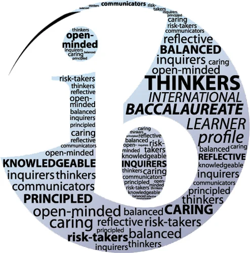
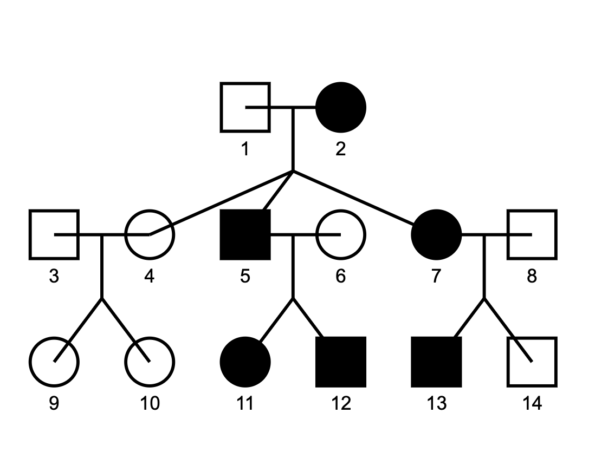

Hello, I'm
Nicole Wu


Hello, I'm
Get To Know More
Hi! I'm Nicole, a computer Science student at Queen’s University. My academic background combines computer science, biology, and data science, making me particularly interested in areas like healthcare informatics, personalized medicine, and machine-learning-based disease diagnosis.
In addition to my technical interests, I’m deeply committed to education. I’ve spent several years teaching and designing engaging STEM activities to inspire curiosity and make science accessible to young learners.
Outside of academics, I enjoy staying active through sports, especially rowing and rugby, which help me balance my studies and fuel my love for teamwork and perseverance.
Browse My Recent

IB Biology research project which investigated antibacterial properties of herbal medicine using E. coli. Conducted experiments with spectrophotometers and analyzed data to explore alternative treatments.
IB Biology research project which explored how pesticides impact metabolic pathways in radish plants. Used Logger Pro for data analysis and presented findings on biochemical changes.

Tracked Jupiter’s position over several nights using celestial tracking software. Analyzed motion patterns and visualized changes in trajectory.

Developed a Python-based tool to predict inheritance patterns in pedigrees, integrating principles of genetics with computational analysis.

Developed comprehensive lesson plans for grammar, reading, and oral expression tailored to young learners preparing for standardized exams such as MAP and TOEFL. Each curriculum focuses on enhancing critical skills like analytical reading, grammar mastery, and speaking confidence.
Get in Touch